Manuel d’utilisation
UniForms
Table des matières
Chapitre 1
Généralités
1.1 But de l’application
Uniforms a pour but de fournir une plateforme de gestion de formulaires. C’est-à-dire,
proposer des fonctionnalités de création et de soumission de formulaires ainsi que la
possibilité de répondre à ces derniers et de consulter les réponses par le créateur du
formulaire.
1.2 Public visé
Ce manuel est destiné aux personnes désirant créer un formulaire, le soumettre à une ou
plusieurs personnes et consulter les réponses faites par les destinataires, mais aussi aux
personnes répondant aux formulaires envoyés par l’intermédiaire de la plateforme
uniforms.
1.3 Installation
Une fois les fichiers sources sur le serveur, aller sur la page res/sql/Installer.php figure 1.1
plusieurs informations vous serons demandées, le serveur, le nom d’utilisateur, le mot de passe
et le nom de la base de données.
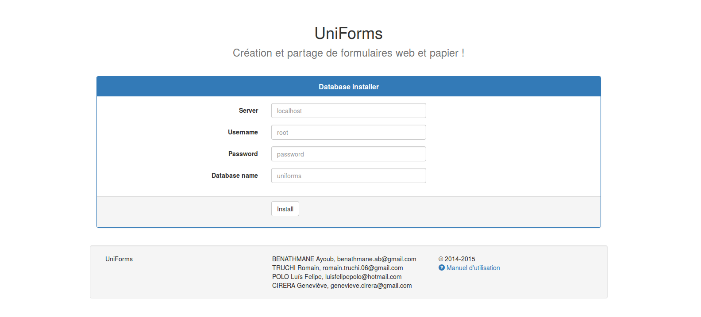
Figure 1.1: Page d’installation
Chapitre 2
Fenêtre principale
2.1 Authentification
La première page affichée est celle de l’authentification, que l’on peut voir figure 2.1, elle en
propose deux types : CAS (pour les utilisateurs disposants d’un identificant CAS
commençant par les initiales du nom et prénom puis du numéro étudiant) ou autres
utilisateurs.
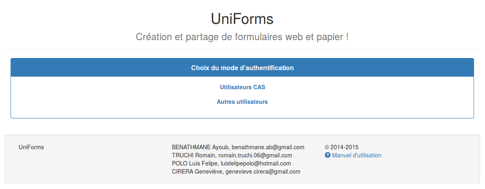
Figure 2.1: Page de choix d’authentification
Pour accéder à la page d’authentification, il suffit de cliquer sur “Utilisateurs CAS” ou
“Autres utilisateurs”
2.1.1 Utilisateur CAS
Une fois choisi l’authentification CAS, la page figure 2.2 s’affiche.
Dans le champs “Identification”, mettre votre identifiant (ex : dj209832, pour Jean Dupont
ayant pour numéro étudiant 209832).
Entrer le mot de passe puis cliquer sur “SE CONNECTER”. Si l’authentification échoue, une
alerte “Mauvais identifiant / mot de passe” apparaitra pour vous en informer. Si elle réussit,
la page d’accueil, figure 2.4, s’affichera.
Figure 2.2: Authentification CAS
2.1.2 Autres utilisateurs
Si vous possédez un compte, cliquer sur “Autre utilisateurs” affichera la page figure 2.3.
Entrez votre identifiant et mot de passe, cliquez ensuite sur “Connection”.
Si l’authentification réussi vous accederez à la page d’accueil figure 2.4, si elle échoue, vous
serez redirigé vers la page de connection figure 2.1
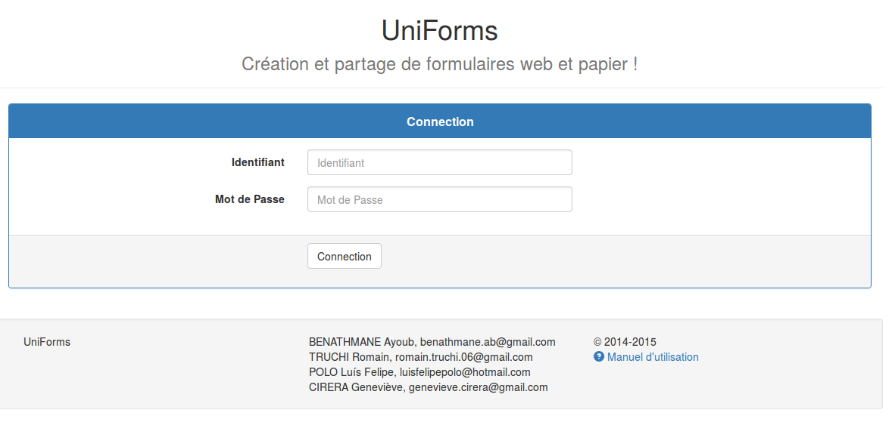
Figure 2.3: Authentification autre utilisateur
2.2 Page d’accueil
Après authentification, la page figure 2.4 s’affiche. On peut noter trois zones principales, une
barre d’option, une zone des trois derniers formulaires créés et une zone avec les trois derniers
formulaires à répondre ou répondus.
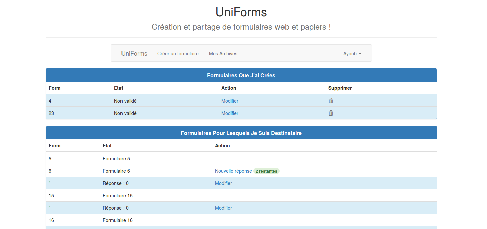
Figure 2.4: Page d’accueil
2.2.1 La barre d’options
La barre d’options figure 2.5 propose divers boutons : “Uniforms”, “Nouveau Formulaire”,
“Mes Formulaires”, “Boite de Réception” et “Ayoub”. Les actions au clique de ces boutons
sont les suivantes :
-
Uniforms
- : Retour à la page d’accueil figure 2.4
-
Nouveau Formulaire
- : Redirection vers la page de création d’un nouveau formulaire
figure 3.1
-
Mes Formulaires
- : Redirection vers les formulaires que vous avez créés figure 2.6.
-
Boite de Réception
- : Redirige vers la page où se situe la liste de tous les formulaires
auxquels vous pouvez répondre figure 2.8 ou avez répondu.
-
Ayoub
- : Identifiant de la personne dont la session est ouverte, au clique, l’option
“Logout” s’affiche pour la déconnection.
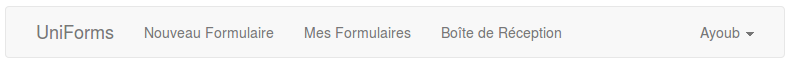
Figure 2.5: Barre d’options
2.2.2 Zone “Mes Formulaires”
Cette zone est présente sur la page d’accueil (avec les trois derniers) et sur la page de “Mes
Formulaires” figure 2.6. La zone de formulaires créés liste l’ensemble des formulaires créés par
l’utilisateur courant, les validés et non validés, figure 2.6.
Un formulaire non validé peut être supprimé en cliquant sur la corbeille de la deuxième
colonne.
Sur la colonne “Status”, l’état du formulaire est affiché, “Enregistré” ou “Publié”.
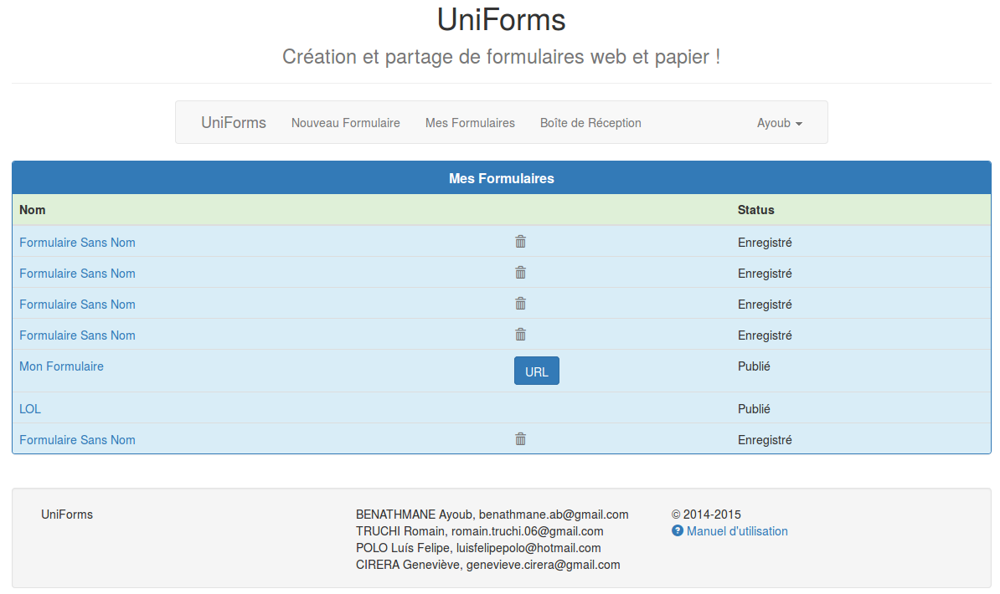
Figure 2.6: Liste des formulaires créés
Les formulaires validés
Les formulaires validés ne peuvent plus être modifiés, ils ont été envoyés aux destinataires. La
seule action possible sur ces formulaires est voir les résultats en cliquant sur le nom du
formulaire souhaité qui montre les réponses du formulaire qui ont déjà été faites par les
destinataires.
Si le formulaire est anonyme, on peut obtenir l’url en cliquant sur le bouton “URL” figure 2.7
de ce formulaire afin de l’envoyer par mail à un destinataire.
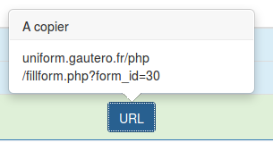
Figure 2.7: URL d’un formulaire validé
Les formulaires non validés
Les formulaires non validés n’ont pas encore été envoyés aux destinataires, ils peuvent donc
être modifiés en cliquant sur le nom du formulaire souhaité. Cette action mènera à la page de
création figure 3.1 pré-rempli par les éléments enregistrés.
2.2.3 Zone “Boite de reception”
Dans cette zone figure 2.8 est listé l’ensemble des formulaires dont l’utilisateur
courant est destinataire, c’est-à-dire ceux pour lesquels il doit répondre ou doit
répondre.
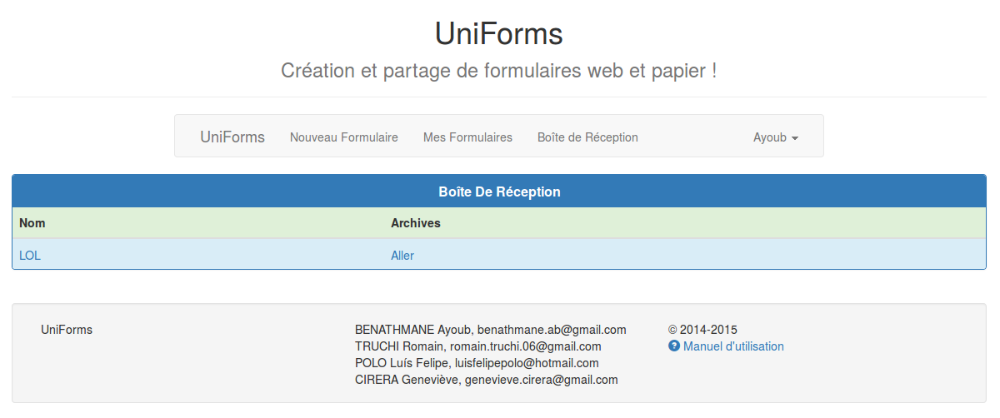
Figure 2.8: Zone de formualaires reçus
En cliquant sur le nom du formulaire, vous êtes redirigés vers une page qui liste toutes les
réponses initiées pour ce formulaire.
Plusieurs cas peuvent se produire :
- Vous avez épuisé le nombre de réponse autorisée, vous ne pouvez donc plus
répondre. figure 2.9

Figure 2.9: Liste des réponses du formulaire “LOL”
- Le formulaire ne se rempli que par vous et il vous reste des réponses à effectuer
figure 2.10. Ici, “Ayoub” est la personne vous ayant soumis le formulaire, entre
parenthèses est indiqué le nombre de réponses restantes en plus de celle commencée
indiquée par “Réponse #0”.
La réponses initiée “Réponse #0” peut être modifié en cliquant sur son lien, la page de
réponses figure 4.1 s’affiche pré-remplie.
Cliquer sur “Nouvelle réponse”, initialisera une nouvelle réponse en vous redirigeant
vers la page de réponse figure 4.1.
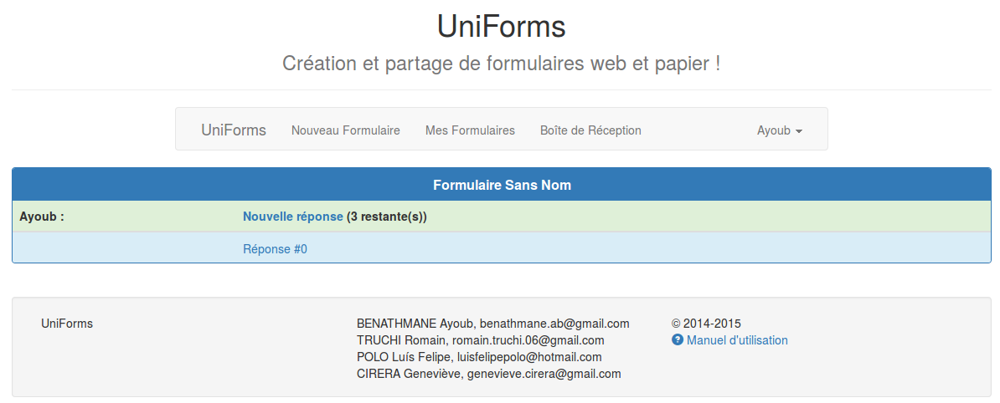
Figure 2.10: Liste des réponses du formulaire “Formulaire Sans Nom”
- Le formulaire se rempli à plusieurs et vous quelqu’un a déjà répondu avant vous. Dans
ce cas, figure 2.11 on peut voir deux lignes car le formulaire a été soumis par “Ayoub”
avec un nombre maximum de réponse supérieur ou égal à deux. Geneviève a répondu 2
fois à ce même formulaire, maintenant c’est votre tour de répondre, et vous ne pouvez
répondre qu’une seule fois pour chaque formulaire vous ayant parvenu (nombre indiqué
entre parenthèses).
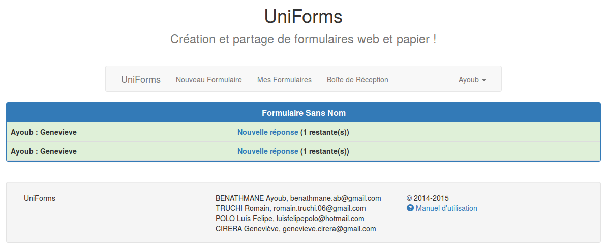
Figure 2.11: Liste des réponses du formulaire “Formulaire Sans Nom” ayant
été répondu par une autre personne également
En cliquant sur “Aller” figure 2.8, vous accédez à la liste de toutes les réponses
que vous avez envoyé pour ce formulaire. Figure 2.12 on peut voir que vous avez
envoyé 2 réponses pour un formulaire soumis par “Ayoub” et répondu ensuite par
“Geneviève”. Vous pouvez ensuite consulter ce que vous avez répondu en cliquant sur les
liens “Réponse#0”. Si plus d’une réponse a été envoyé, il y aura “Réponse#0”,
“Réponse#1”,...
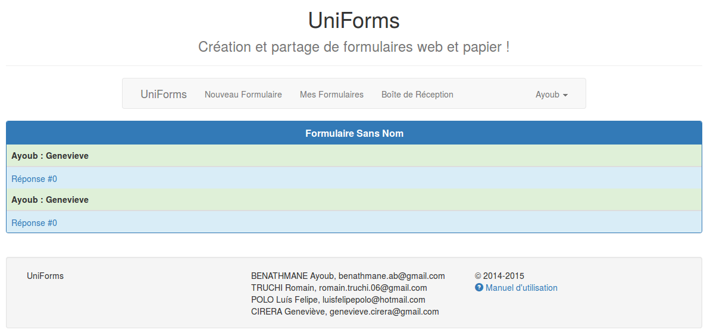
Figure 2.12: Liste des réponses envoyées pour le formulaire “Formulaire Sans Nom”
Chapitre 3
Création
3.1 Créer un formulaire
Pour créer un formulaire, la première étape est de cliquer sur le bouton “Nouveau
Formulaire” de la barre d’options, voir figure 2.5. Ensuite la page de création, figure 3.1,
s’affiche.
On peut distinguer plusieurs zones. On retrouve tout d’abord la barre d’option vu
section 2.2.1, puis une zone de “Groupe” à gauche, une zone avec une page quadrillée puis sur
le coté droit, deux petites zones, une avec deux cases à cocher figure ?? et une autre avec une
liste d’élément figure 3.6.
Tout en bas de cette page, deux boutons “Enregistrer” et “Publier”, permettant
respectivement d’enregistrer un formulaire (afin de pouvoir le modifier par la suite) et de
publier un formulaire, ce dernier sera alors envoyé aux destinataires, aucune modification ne
sera alors permise.
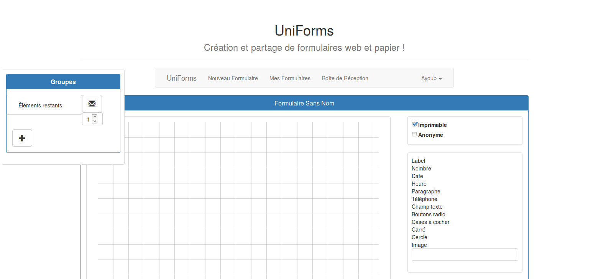
Figure 3.1: Page de création de formulaire
3.1.1 Zone de “Paramètres”
Deux champs sont paramètrables, figure 3.2 :
-
Imprimable
- : à cocher si vous souhaitez imprimer le formulaire
-
Anonyme
- : à cocher si vous ne souhaitez pas définir de destinataire en particulier. Ce
formulaire sera donc en accès libre à toutes les personnes disposants de son lien
url.
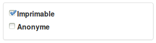
Figure 3.2: Paramètres de création de formulaire
3.1.2 Zone de “Groupe”
Cette zone figure 3.5 permet de créer des groupes d’éléments et de les assigner à une ou
plusieurs personnes. Elle permet notamment de créer un formulaire pour une demande
d’autorisation soumis à plusieurs personnes et ayant la même personne pour sa
validation.
Le groupe “Éléments restants” n’est pas supprimable, il contient par défaut tous les éléments
n’appartenant à aucun autre groupe.
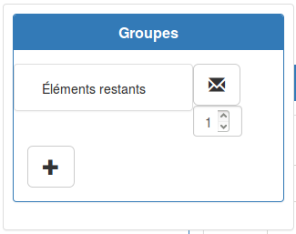
Figure 3.3: Zone de groupes
Pour ajouter des groupes, cliquer sur le bouton “+”, ensuite glissez-déposez les éléments
que vous souhaitez mettre dans ce groupe.
Pour assigner des destinataires à un groupe, cliquez sur la bouton avec l’enveloppe une
fenêtre modale figure ?? s’ouvrira. Le nombre en dessous du bouton avec l’enveloppe
correspond au nombre de réponse maximum autorisé au(x) destinataire(s) de ce
groupe.
3.1.3 Destinataires
Pour sélectionner un destinataire, ouvrez la fenêtre modale figure ??, commencez à écrire son
numéro étudiant ou identifiant dans le champs d’entrée, une liste déroulante apparaitra avec
toutes les possibilités.
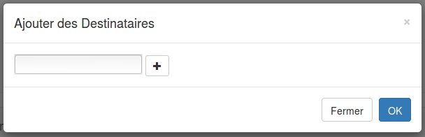
Figure 3.4: Fenêtre modale pour la sélection des destinataires
Sélectionnez ensuite le destinataire souhaité et cliquez sur “+”, le destinataire s’affichera
alors à coté avec une checkbox figure 3.4. Si vous souhaitez éliminer un destinataire, décochez
la checkbox.
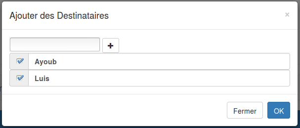
Figure 3.5: Fenêtre modale pour la sélection des destinataires avec deux destinataires
sélectionnés
3.1.4 Éléments
Douze éléments sont disponibles, figure 3.6, pour les utiliser il suffit de les glisser-déposer avec
la souris sur la page quadrillée. Vous trouverez en annexe, le descriptif de chaque
élément.
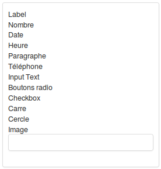
Figure 3.6: Éléments disponibles pour la création
Ajouter un élément
Pour ajouter un élément, le placer par
glisser-déposer
sur la zone quadrillée.
L’élément est ensuite paramétrable par une série de champs s’affichant en dessous de la liste
des éléments personnels à chaque type d’élément. Si un élément est placé à l’extérieur de la
zone autorisé, il reviendra à sa place d’origine.
Modifier un élément
Pour modifier un élément, cliquer sur celui-ci, il s’encadre alors en rouge et les champs de
paramétrage s’affiche à droite. Modifier les valeurs souhaitées. La taille hauteur et
largeur peuvent également être modifiées par la souris. Par survol de la souris, une
flèche apparait en bas à droite de l’élément, elle permet le redimensionnement de
l’élément.
Vous pouvez également déplacer l’élément par un simple glisser-déposer à l’intérieur de la
zone quadrillée.
Supprimer un élément
Pour supprimer un élément, il suffit de sélectionner l’élément, il doit apparaitre encadré en
rouge, puis de presser la touche “Del” ou “Suppr”.
3.1.5 Page quadrillée
La page quadrillée est la zone du formulaire, les éléments y sont placés. La hauteur et la
largeur de cette zone est celle d’une page A4, la délimitation entre deux pages différentes est
marquée par un trait noir horizontal.
Lors de l’ajout d’éléments, si un élément est placé bas dans la page, la zone s’aggrandit
automatiquement de la hauteur d’une page A4.
3.2 Modifier un formulaire
Pour modifier un formulaire, il faut tout d’abord cliquer sur le nom du formulaire que l’on
souhaite modifier sur la page de “Mes Formulaires” figure 2.6, ce qui ouvrira la page de
création de formulaire vue section 3.1. Cette page est remplie par les éléments, destinataires
et paramètres enregistrés précédemment. Vous pouvez alors modifier ce que vous souhaitez, le
ré-enregistrer ou le valider.
3.3 Consulter les réponses d’un formulaire
Sur la page “Mes Formulaires” figure 2.6, cliquer sur le nom d’un formulaire publié amène à
la page où se situe toute la liste des réponses qui ont été effectuée figure 3.7.
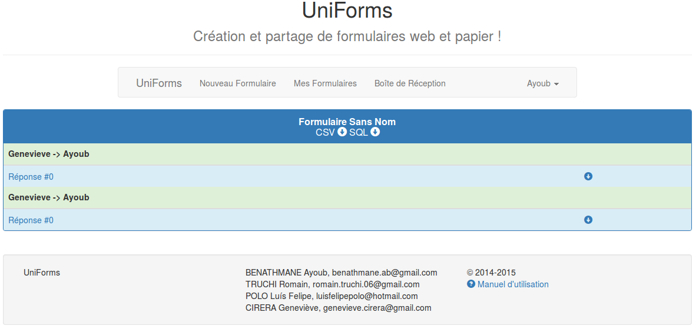
Figure 3.7: Page de consultation des réponses
Ici, vous avez la possibilité de consulter les réponses sous deux formes, directement sous la
forme du formulaire rempli en cliquant sur “Réponse #0”, “Réponse #1”,..., cela vous mène à
la page figure 3.8. Ou bien, en téléchargeant le fichier CSV par réponse en cliquant sur l’icone
de la colonne de droite ou en cliquant sur les icone de CSV ou SQL pour respectivement
télécharger tous les résults en CSV et SQL.
Sur la page figure 3.8, vous avez la possibilité de passer de résultats en résultats
grâce aux boutons “Previous” et “Next”, le bouton “Back” vous ramène à la page
figure 3.7.
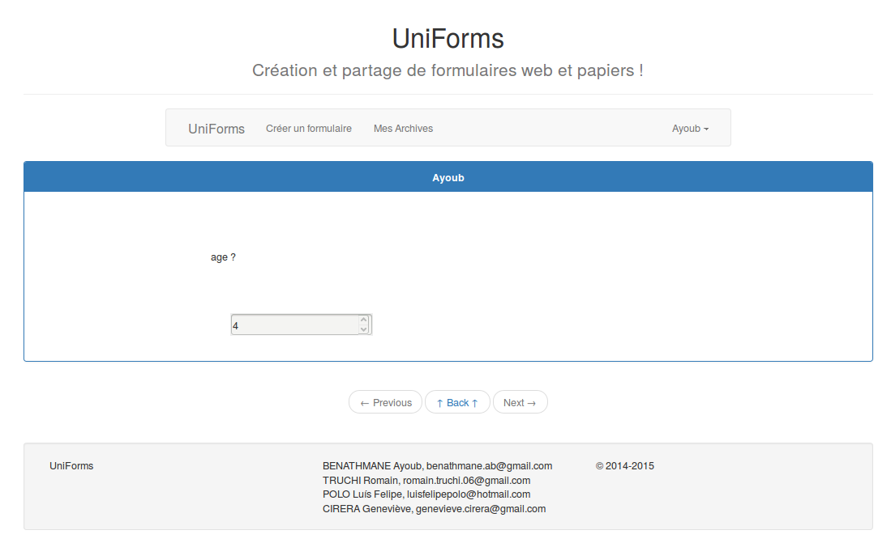
Figure 3.8: Formulaire rempli par un destinataire
Chapitre 4
Répondre
4.1 Répondre à un formulaire
Pour répondre à un formulaire, il suffit de cliquer sur “Nouvelle réponse” figure 2.8. La
page de réponse à un formulaire s’ouvre, la zone de réponse figure 4.1 s’affiche au
centre.
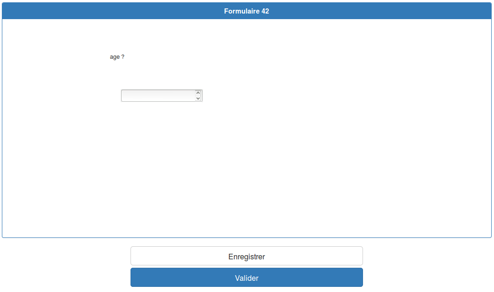
Figure 4.1: Zone de réponse
Après avoir rempli les champs, vous avez deux possibilités, enregistrer la réponse
pour la modifier plus tard ou la valider (Envoyer), dans ce cas elle ne sera plus
modifiable.
4.2 Modifier votre réponse
Afin de modifer votre réponse, cliquer sur “Réponse #” du formulaire souhaité sur la page
figure 2.10.
La page de réponse figure 4.1 s’affichera pré-remplie avec vos réponses enregistrées.
Modifiez ce que vous souhaitez et vous pouvez ensuite soit enregistrer soit valider votre
réponse.
Chapitre 5
FAQ
5.1 Mon écran n’affiche pas correctement la page
Changez la résolution, zoomez ou dezoomez grâce à la combinaison Ctrl + roulette de la
souris.
5.2 Puis-je mettre des destinataires dont je connais l’email ?
Non, il est nécessaire que tous les destinataires aient un compte CAS. Si vous souhaitez
envoyer un formulaire à un membre exterieur, vous pouvez créer un formulaire anonyme et le
lui soumettre en lui envoyer l’url du formulaire.
5.3 Je ne comprends rien aux groupes, je veux juste envoyer un formulaire à une
personne
Dans ce cas, remplissez juste le(s) destinataire(s) et le nombre maximum de réponse pour ce
formulaire par une même personne du groupe “Éléments restants”. Puis créer votre formulaire
normalement.
5.4 Trop de réponses me reviennent
Si trop de réponses vous reviennent c’est que vous avez fait des groupes et que le nombre de
destinataires de chaque groupe multiplié entre eux et multiplié aux nombres de réponses par
groupe est très élevé. Vérifiez ces informations.
Chapitre 6
Annexe
6.1 Description des éléments
6.1.1 Label
Si vous souhaitez placer du texte dans le formulaire, mettez un label, puis remplissez la valeur
“Value” des paramètres par le texte désiré.
6.1.2 Nombre
Si vous souhaitez mettre un champs d’entrée que le destinataire devra remplir par un nombre,
mettez un champs nombre. Vous pouvez paramétrer le nombre minimum et maximum que les
destinataires seront autorisés à remplir.
6.1.3 Date
Pour un champs de date.
6.1.4 Heure
Pour un champs de heure.
6.1.5 Paragraphe
Si vous souhaitez proposer aux destinataires un champs plus large pour écrire un
paragraphe.
6.1.6 Input Text
Si vous souhaitez proposer aux destinataires un champs de texte court.
6.1.7 Boutons radios
Si vous souhaitez proposer aux destinataires plusieurs choix mais qu’il ne puisse en
selectionner qu’un, mettez des boutons radios. Après son placement sur la page quadrillée, un
bouton “+” apparaitra dans la zone de paramétrage des éléments. Cliquez sur “+” pour
pouvoir ajouter des valeurs. Cliquez sur “-” pour en éliminer.
6.1.8 Checkbox
Les checkbox fonctionne comme les boutons radios sauf que les destinataires pourront
sélectionner plusieurs réponses au lieu d’une unique.
6.1.9 Carré
Si vous souhaitez placer un carré redimensionnable par la suite en rectangle de n’importe
quelle taille.
6.1.10 Cercle
Si vous souhaitez placer un cercle redimensionnable par la suite en ovale de n’importe quelle
taille.
6.1.11 Image
Si vous souhaitez insérer une image dans le formulaire, drag’n’droppez “Image”
puis cliquez sur “Browse”, sélectionnez enfin l’image voulu. Elle s’affichera dans le
formulaire.